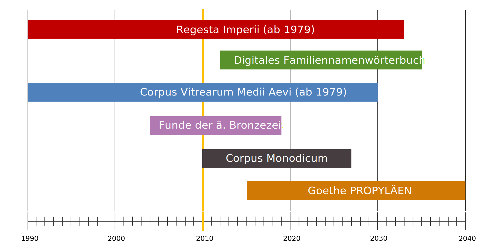

27.09.2017 | TYPO3 University Day 2017
TYPO3
In den Digital Humanities
Slides:
https://digicademy.github.io/2017_typo3_digital_humanities/
Torsten Schrade, Akademie Mainz
|
 @digicademy |
@digicademy |
 digicademy |
CC-BY 4.0
digicademy |
CC-BY 4.0
Digital...WAS?


Akademien der Wissenschaften
Die Union der deutschen Akademien der Wissenschaften ist die Dachorganisation von acht deutschen Wissenschaftsakademien.
Forschungsprojekte
Geisteswissenschaftliche Grundlagenforschung


Big Data & Long Data
Aus Perspektive einer Akademie
Big Data & Long Data
Aus Perspektive einer Akademie
Grundlagenforschung
Projektlaufzeiten (Mainz)
Herausforderungen
Schnelle technische Innovationszyklen im Verhältnis zu den Projektlaufzeiten

Die Digitale Akademie
Digital Humanities Forschungsteam der Mainzer Akademie
Das Spektrum umfasst die Konzeption, Gestaltung und Realisierung geisteswissenschaftlicher Forschungsanwendungen und -umgebungen, die Beratung der Akademie zu allen Aspekten der Digitalität sowie die Projektbegleitung bei der Umsetzung digitaler Komponenten zusammen mit Partnern aus Wissenschaft und Wirtschaft.
Gleichzeitig nimmt die Forschung an Kernfragen der Digitalen Geisteswissenschaften sowie die Lehre und Ausbildung des wissenschaftlichen DH-Nachwuchses einen hohen Stellenwert ein.
- Team aus Geisteswissenschaftler_innen, Informatiker_innen und Mitarbeiter_innen mit dualer Qualifikation
- DH Forschung und DH Anwendungsorientierung
- Einbeziehung von Methoden aus der freien Wirtschaft und Softwareindustrie
- Aktuell 22 Forschungsprojekte, in denen TYPO3 eine maßgebliche Rolle spielt
- 6 im TER/GitHub veröffentlichte Extensions, ca. 30 interne / projektspezifische Extensions für verschiedene Anwendungsbereiche, hiervon ca. 10 in Vorbereitung auf eine Veröffentlichung
TYPO3 Projekte
Beispiele in Auswahl

Regesta Imperii Online
- Datenbank mit 176.000 Urkundenregesten im Volltext
- Literaturdatenbank mit 1.7 Mio Titeln zum europäischen Mittelalter
- Komplexe boolsche Suchlogik mit Schreibweisentoleranz
- Alle Regesten in CEI via systemneutraler REST-Schnittstelle (Lizenz CC-BY)

Website: http://www.corpusvitrearum.de
Corpus Vitrearum Digital
- Hochauflösende TIFF-Bilder zum freien Download (CC-BY)
- Metadaten eingebettet als XMP (ISO-Standard)
- Inhaltliche Erschließung mit kontrollierem Vokabular (ICONCLASS)
- REST-Schnittstellen für Metadaten in XMP und JSON-LD (Semantic Web)

Website: http://www.inschriften.net
Deutsche Inschriften Online
- 42 Inschriftenbände bzw. -bestände mit ca. 17.000 Katalognummern und 18.000 Abbildungen
- Flexible XML Workflows zur Überführung der Banddaten in die Applikation
- Persistente Referenzierung aller Artikel mittels URN der Deutschen Nationalbibliothek
- Standardkonforme Ausgabe der Kataloartikel als TEI/EpiDoc via REST-Interface

Controversia & Confessio Digital
- Quellen- und Personendatenbank mit komplexen Beziehungen (Autoren, Gegner, Drucker, etc.)
- Umfängliche Suchmöglichkeiten (rollenbasiert, chronologisch, geographisch)
- Aufbereitung der Daten für die historische Netzwerkanalyse
- Webfrontend vollständig nach Responsive Web / Mobile First ansatz

Website: http://www.gluck-gesamtausgabe.de
Digitales Gluck Werkverzeichnis
- Bisher 70 ausführliche Werkbeschreibungen, 2000 Quellen aus 432 Archiven, über 1000 nachgewiesene Personen (Sänger, Tänzer, Widmungsempfänger), 370 kartierte Spielorte
- Komplexe Suchfunktionalitäten für Werke und Quellen, Register für Spielorte, Archivorte und Personen
- SVG-basierte Notenanzeige (via Verovio) aus Plaine & Easie Kodierungen

Website: http://www.namenforschung.net
Digitales Familiennamenwörterbuch
- Digitale Editionsumgebung, basierend auf nativer XML-Datenbank, Erfassung der Namenartikel in TEI
- Kartenapplikation zur Kartierung der Familiennamen auf Basis der Telefonanschlüsse (Stand 2005)
- REST-basierte Applikationsarchitektur mit TYPO3 Frontend zur Anzeige und Recherche der Namenartikel
Digitale Edition der Augsburger Baumeisterbücher
Projektarchitektur
VFU, Microservices, DevOps, Standards, Schnittstellen
- Gefördert von der DFG, Projektlaufzeit 2014–2019
- Projektpartner in der aktuellen Förderphase sind der Forschungsschwerpunkt Historische Kulturwissenschaften, das Trier Center for Digital Humanities und die Digitale Akademie
- Kooperationspartner sind das Stadtarchiv Augsburg, das mainzed und die Universitätsbibliothek Mainz.


Digitale Edition
Präsentationsschicht auf Basis des Cultural Heritage Frameworks

Startseite der Augsburger Baumeisterbücher

{kind=link}
{kind=link}
{kind=link}
{kind=link}
Das Cultural Heritage Framework
Auf Basis verschiedener TYPO3 Extensions
Das Cultural Heritage Framework
Komponenten im Überblick

{kind=link}
Das Cultural Heritage Framework
Komponenten im Überblick

Das Cultural Heritage Framework
Komponenten im Überblick

{kind=link}
Beaconizer
Normdatenaggregator und -provider
- Dezentrale Vernetzung elektronischer Ressourcen über Normdaten
- GND als ein Identifikatoren-Standard für Personen
- Mehr Informationen: Wikipedia
- BEACON Findbuch Webservice
{kind=link}
{kind=link}
Vocabulary
LOD und TYPO3
{kind=link}
- Erstellung von RDF-Vokabularen für Spezifikationen etc.
- Verschiedene RDF-Serialisierungen im TYPO3 Frontend möglich (HTML, RDF/XML, Turtle)
- Metaebene: Über Datensätze innerhalb des TYPO3 Systems "sprechen"
{kind=link}
{kind=link}
Academy
Extension zur Erstellung von Forschungsportalen
{kind=link}
- Klassische Entitäten einer Forschungsdomäne: Projekte, Personen, Organisationseinheiten, Nachrichten, Ereignisse und Medien
- Frei über das Backend konfigurierbare Rollen
- Einbeziehung von Metadatenstandards, bspw. hcard für Kontaktdatensätze und (in Zukunft) CERIF für Linked Open Data Szenarien
{kind=link}
{kind=link}
F I N I S
Vielen Dank für die Aufmerksamkeit!
Links, Software & Nachnutzung
Links zu den genannten TYPO3 Projekten
- Augsburger Baumeisterbücher
- Controversia et Confessio
- Corpus Vitrearum Medii Aevi
- Deutsche Inschriften Online
- Digitales Familiennamenwörterbuch Deutschlands
- Gluck Gesamtausgabe
- Regesta Imperii Online
Benutze Software
- Impress.js (Presentation)
- Open Sans (Google Font)
- Magnific Popup (Lightbox)
- Swiper (Responsiver Slider)
- Unite Gallery (Bildergallerie)
Lizenzhinweis
- Link: https://digicademy.github.io/2017_typo3_digital_humanities/
- Lizenz: CC-BY 4.0, Torsten Schrade